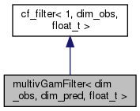

multivGamFilter< dim_obs, dim_pred, float_t > Class Template Reference
Another class template for Gamma filtering, but this time. More...
#include <cf_filters.h>
Inheritance diagram for multivGamFilter< dim_obs, dim_pred, float_t >:

Collaboration diagram for multivGamFilter< dim_obs, dim_pred, float_t >:

Public Types | |
| using | psv = Eigen::Matrix< float_t, dim_pred, 1 > |
| "predictor size vector" | |
| using | bsm = Eigen::Matrix< float_t, dim_obs, dim_pred > |
| "beta size matrix" | |
| using | tsv = Eigen::Matrix< float_t, 2, 1 > |
| "two by 1 vector" to store size and shapes of gamma distributions | |
| using | osv = Eigen::Matrix< float_t, dim_obs, 1 > |
| "observation size vector" | |
| using | osm = Eigen::Matrix< float_t, dim_obs, dim_obs > |
| "observation size matrix" | |
 Public Types inherited from cf_filter< 1, dim_obs, float_t > Public Types inherited from cf_filter< 1, dim_obs, float_t > | |
| using | ssv = Eigen::Matrix< float_t, dimstate, 1 > |
| using | osv = Eigen::Matrix< float_t, dimstate, 1 > |
Public Member Functions | |
| multivGamFilter (const float_t &nOneTilde, const float_t &dOneTilde) | |
| Constructor. More... | |
| virtual | ~multivGamFilter () |
| The (virtual) desuctor. | |
| float_t | getLogCondLike () const |
| Get the latest conditional likelihood. More... | |
| tsv | getFilterVec () const |
| Get the current filter vector. More... | |
| void | update (const osv &yt, const psv &xt, const bsm &B, const osm &Sigma, const float_t &delta) |
| Perform a filtering update. More... | |
| osv | getFcastMean (const psv &xtp1, const bsm &B, const osm &Sigma, const float_t &delta) |
| Get the forecast mean (assuming filtering has been performed already) More... | |
| osm | getFcastCov (const psv &xtp1, const bsm &B, const osm &Sigma, const float_t &delta) |
| Get the forecast covariance matrix (assuming filtering has been performed already) More... | |
| Public Member Functions inherited from cf_filter< 1, dim_obs, float_t > | |
| virtual | ~cf_filter () |
| The (virtual) destructor. | |
Private Attributes | |
| tsv | m_filtVec |
| filter vector (shape and rate) | |
| float_t | m_lastLogCondLike |
| last log of the conditional likelihood | |
| bool | m_fresh |
| has data been observed? | |
Detailed Description
template<size_t dim_obs, size_t dim_pred, typename float_t>
class multivGamFilter< dim_obs, dim_pred, float_t >
Another class template for Gamma filtering, but this time.
Constructor & Destructor Documentation
◆ multivGamFilter()
template<size_t dim_obs, size_t dim_pred, typename float_t >
| multivGamFilter< dim_obs, dim_pred, float_t >::multivGamFilter | ( | const float_t & | nOneTilde, |
| const float_t & | dOneTilde | ||
| ) |
Constructor.
- Parameters
-
nOneTilde degrees of freedom for time 1 prior. dOneTilde rate parameter for time 1 prior.
Member Function Documentation
◆ getFcastCov()
template<size_t dim_obs, size_t dim_pred, typename float_t >
| auto multivGamFilter< dim_obs, dim_pred, float_t >::getFcastCov | ( | const psv & | xtp1, |
| const bsm & | B, | ||
| const osm & | Sigma, | ||
| const float_t & | delta | ||
| ) |
Get the forecast covariance matrix (assuming filtering has been performed already)
gets the forecast covariance matrix!
- Parameters
-
xtp1 the next time period's predictor vector B the loadings matrix Sigma the observation "shape" matrix delta between 0 and 1 the discount parameter
- Returns
- a forecast covariance matrix
◆ getFcastMean()
template<size_t dim_obs, size_t dim_pred, typename float_t >
| auto multivGamFilter< dim_obs, dim_pred, float_t >::getFcastMean | ( | const psv & | xtp1, |
| const bsm & | B, | ||
| const osm & | Sigma, | ||
| const float_t & | delta | ||
| ) |
Get the forecast mean (assuming filtering has been performed already)
gets the forecast mean!
- Parameters
-
xtp1 the next time period's predictor vector B the loadings matrix Sigma the observation "shape" matrix delta between 0 and 1 the discount parameter
- Returns
- a mean vector
◆ getFilterVec()
template<size_t dim_obs, size_t dim_pred, typename float_t >
| auto multivGamFilter< dim_obs, dim_pred, float_t >::getFilterVec | ( | ) | const |
Get the current filter vector.
get the current filtering distribution. First element is the shape, second is the rate.
- Returns
- a vector of the shape and rate parameters of f(p_t | y_{1:t})
◆ getLogCondLike()
template<size_t dim_obs, size_t dim_pred, typename float_t >
|
virtual |
Get the latest conditional likelihood.
- Returns
- the latest conditional likelihood.
Implements cf_filter< 1, dim_obs, float_t >.
◆ update()
template<size_t dim_obs, size_t dim_pred, typename float_t >
| void multivGamFilter< dim_obs, dim_pred, float_t >::update | ( | const osv & | yt, |
| const psv & | xt, | ||
| const bsm & | B, | ||
| const osm & | Sigma, | ||
| const float_t & | delta | ||
| ) |
Perform a filtering update.
Perform a Gamma filter update.
- Parameters
-
yt the most recent dependent random variable xt the most recent predictor vector B the loadings matrix Sigma the observation "shape" matrix. delta between 0 and 1 the discount parameter
The documentation for this class was generated from the following file:
- include/pf/cf_filters.h